전파전자통신기능사 (2015-06-06 기출문제)
1과목: 임의 구분
1. 디지털 변조방식으로 ASK와 PSK의 조합된 형태는?
- ASK
- FSK
- PSK
- APSK
(정답률: 85%)

2. 다음과 같은 회로를 무엇이라고 하는가?
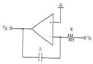
- 가산기
- 부호변환기
- 미분기
- 적분기
(정답률: 73%)
3. 무선 수신기 고주파 증폭회로의 작용과 거리가 먼 것은?
- 감도가 증가한다.
- 선택도가 좋아진다.
- S/N 비가 좋아진다.
- 용량이 증가한다.
(정답률: 67%)
4. 다음 중 FM 수신기에 사용되지 않는 것은?
- IDC 회로
- 진폭제한기
- 스켈치 회로
- 주파수 변별기
(정답률: 50%)
5. 30[MHz] 주파수의 파장은?
- 1 [m]
- 5 [m]
- 10 [m]
- 100 [m]
(정답률: 69%)
6. 최적사용주파수(FOT)를 바르게 나타낸 것은? (단, LUF는 최저사용주파수, MUF는 최고사용주파수이다)
- FOT = MUF
- FOT = LUF
- FOT = MUF x 0.85
- FOT = LUF X 0.85
(정답률: 89%)
7. 전리층의 이론상 높이를 구하는 식으로 옳은 것은? (단, t는 지표파와 전리층 반사파와의 시간차, c는 빛의 속도이다.)


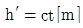

(정답률: 83%)
8. 다음의 주파수대 약칭 중 전파의 파장이 가장 짧은 것은?)
- VHF
- VLF
- HF
- EHF
(정답률: 64%)
9. 10[MHz]를 사용하는 반파장 다이폴 안테나의 길이는 얼마인가?)
- 100[m]
- 50[m]
- 15[m]
- 5[m]
(정답률: 64%)
10. 특성 임피던스가 100 [Ω]의 급전선에 부하 임피던스가 200 [Ω]이 연결되었을 때 전압 반사계수는 얼마인가?
- 0. 33
- 0.5
- 3.3
- 5
(정답률: 69%)
11. 다음 중 조난당한 선박에서 퇴선하는 때에 구명정으로 반드시 운반해야 하는 장비로서 모두 맞는 것은?
- EGC수신기 및 SART
- 2-WAY VHF TEL 및 SART
- 위성 EPIRB 및 VHF DSC
- NAVTEX 수신기 및 VHF DSC
(정답률: 62%)
12. 지구국의 대구경 공중선의 방향을 항상 위성을 향하도록 자동 추적하는 장치는?
- 추미(tracking) 장치
- 변조 장치
- 제어 장치
- 도파관 장치
(정답률: 84%)
13. 다음 중 위성통신에 대한 설명으로, 적합하지 않는 것은?
- 주로 초단파를 사용한다
- 대용량의 통신 및 다원 접속이 가능하다.
- 지리적 여건에 관계없이 회선설정이 용이하다
- 보안유지를 위한 특별한 암호장치가 필요하다.
(정답률: 69%)
14. 다음 중 위성통신 지구국에 주로 사용하는 공중선은?
- 휩 안테나
- 다이폴 안테나
- 카세그레인 안테나
- 루프 안테나
(정답률: 68%)
15. 1[mW]는 몇 [dBm] 인가?
- 0[dBm]
- 10[dBm]
- 20[dBm]
- 30[dBm]
(정답률: 41%)
16. AM 수신기의 충실도와 관계가 먼 것은?
- 검파 왜곡
- 주파수 개선도
- 위상 왜곡
- 맥동률
(정답률: 80%)
17. 다음은 안테나 측정에 관한 설명이다, 틀린 것은?
- 안테나 전력은 안테나 회로의 전류계 지시값 (Ia)과, 안테나 실효저항 (Ra)의 곱으로 나타낸다.
- 수직 접지 안테나의 높이가 너무 낮으면, 주위의 차폐물로 인하여 전파복사가 어렵게 될 수 있다.
- 수직 접지 안테나는 중파나 장파대에 적합하고, 단파대에서는 다이폴 안테나를 주로 쓴다.
- 안테나로부터 임의의 거리가 딸어진 곳에서 복사 전파가 만드는 전기장의 세기는 안테나의 접지가 가까운 곳의 전류에 비례한다.
(정답률: 54%)
18. 안테나의 실효저항(Re)이 5[Ω], 안테나 회로의 전류계 지시값(Ia)이 4[A]일 때, 안테나에 공급되는 전력(P)의 값은?
- 20[W]
- 40[W]
- 80[W]
- 100[W]
(정답률: 59%)
19. 정류 전원회로에서 무부하시 직류전압이 100[V]이고, 전압 변동률이 25[%]일 경우, 전부하시 전압(Vo)은 얼마인가?
- 70[V]
- 80[V]
- 90[V]
- 100[V]
(정답률: 75%)
20. 어떤 정류회로에서 부하 양단의 전압이 200[V]이고, 맥동률이 1.5[%]이라면 교류 성분은 얼마인가?(오류 신고가 접수된 문제입니다. 반드시 정답과 해설을 확인하시기 바랍니다.)
- 3[V]
- 7.5[V]
- 4[V]
- 15[V]
(정답률: 31%)
2과목: 임의 구분
21. 다음 중 관보(Government telegram)의 발신권자에 해당하지 않는 것은?
- diplomatic or consular agents
- the International Court of Justice
- the Operating Agency
- the Secretary-General of the United Nations
(정답률: 45%)
22. 다음 중 국제전기통신연합(ITU)의 목적이 아닌 것은?
- to promote the extension of the benefits df the new telecommunication technologies.
- to promote the adoption of GMDSS for ensuring the safety of life through the cooperation of telecommunication services.
- to promote and to offer technical assistance to developing countries in the field of telecommunication
- to maintain and extend international cooperation between all Members of the Union
(정답률: 66%)
23. Choose the best one for the following description
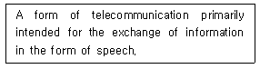
- Telegraphy
- Telephony
- Telecommunication
- Telegram
(정답률: 76%)
24. 다음 문장이 정의하는 것으로 가장 적절한 용어는?
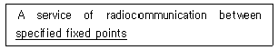
- mobile service
- radio service
- fixed service
- special service
(정답률: 70%)
25. 다음 영문의 괄호 안에 가장 적당한 것은?
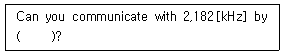
- radiotelephony
- radiotelegraphy
- emergency signal
- urgency telegram
(정답률: 56%)
26. 다음 중 밑줄 친 부분의 해석으로 가장 적합한 것은?
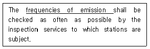
- 발사주파수
- 수신주파수
- 대역주파수
- 가청주파수
(정답률: 62%)
27. Are you troubled by static?에 대하여 공전의 방해를 조금 받는다고 응답하고자 한다. 다음 괄호 안에 들어갈 적당한 단어는?
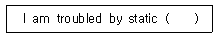
- no
- slightly
- nothing
- highly
(정답률: 80%)
28. 다음 문장의 괄호 안에 들어 갈 가장 적당한 단어는?
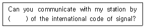
- refuse
- confirm
- means
- cease
(정답률: 68%)
29. 다음 문장에 알맞은 무선전화 통화 용어는?
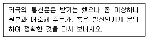
- over
- out
- roger
- verify
(정답률: 83%)
30. “Do not terminate this conversation or change the subject because I have more to say”의 무선전화용어는?
- stay on
- stand by
- wait on
- very good
(정답률: 40%)
31. 다음 중 무선전화 알파벳 통화표에서 발음이 틀린 것은?
- F : FOKS TROT
- E : ECK OH
- L : LEE MAH
- T : TAH IM
(정답률: 80%)
32. 다음 중 문자 “M”을 음성통화표로 바르게 발음한 것은?
- MILE
- MIKE
- MAIKE
(정답률: 79%)
33. 다음 영문의 가장 올바른 해석은?
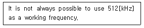
- 512[kHz]를 통신주파수로 사용하는 것은 항상 불가능하다.
- 512[kHz]를 통신주파수로 사용하는 것은 항상 가능할 수 있다.
- 512[kHz]를 통신주파수로 사용하는 것을 항상 가능하게 한다.
- 512[kHz]를 통신주파수로 사용하는 것이 항상 가능한 것은 아니다.
(정답률: 70%)
34. 다음 중 해안지구국이 소재하지 않는 곳은 어느 곳인가?
- Kumsan
- Eik
- Yamaguchi
- Tokyo
(정답률: 75%)
35. Willy Willy는 어느 해역에서 발생하는 열대성 저기압인가?
- Oceania
- India Ocean
- Pacific Ocean
- Atlantic Ocean
(정답률: 64%)
36. 다음은 표준주파수 및 시보국이다. 나라명과 무선국명이 맞지 않는 것은?
- France – Nauen
- Canada – Ottawa(CHU)
- Australia – Lyndhurst, Victoria(VNG)
- Hong Kong – Cape D’Aguilar Radio(VPS)
(정답률: 71%)
37. 다음 중 선박에서 선장에 해당하는 명칭은?
- Master
- Officer
- Engineer
- sailor
(정답률: 88%)
38. 다음 중 선박의 홀수를 나타내는 단어는?
- depth
- height
- draught
- mast
(정답률: 72%)
39. Choose the incorrect meaning in the following examples.
- Stand by - 잠시 기다리시오.
- In figures - 다음은 아라비아 숫자이다.
- Wait out - 대기 상태를 종료하시오.
- Say again - 반복하여 주시오.
(정답률: 75%)
40. 다음 문장의 괄호 안에 가장 알맞은 것은?
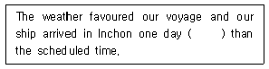
- fastest
- late
- earlier
- quick
(정답률: 79%)
3과목: 임의 구분
41. 주어진 발사종별의 전파에 대하여 특정한 조건하에서 사용되는 통신방식에 필요한 전송 속도와 품질로 정보를 전송하는데 충분한 주파수대폭을 무엇이라 하는가?
- 점유주파수대폭
- 스퓨리어스대폭
- 필요주파수대폭
- 특성주파수대폭
(정답률: 80%)
42. 방송법에 의한 방송사업을 위하여 이용하는 방송용 주파수의 관리는 어느 기관에서 수행하는가?
- 미래창조과학부
- 중앙전파관리소
- 방송통신위원회
- 한국방송공사
(정답률: 61%)
43. 전파를 보내거나 받는 전기적 시설을 무엇이라 하는가?
- 무선국
- 무선설비
- 방송국
- 송신설비
(정답률: 71%)
44. 다음 중 미래창조과학부장관이 주파수 회수 또는 재배치를 할 때에 해당 시설자에게 통상적으로 발생하는 손실을 보상하여야 하는 경우는?
- 시설자 등의 요청에 따른 경우
- 국제전기통신연합이 모든 국가가 공통적으로 수용하여야 할 주파수 국제분배를 변경함에 따라 주파수분배를 변경한 경우
- 전파의 효율적인 이용을 위하여 필요한 경우
- 주파수의 용도가 제2순위 업무인 주파수를 사용하는 경우
(정답률: 51%)
45. 다음 중 주파수 할당의 결격사유에 해당되지 않는 것은?
- 외국정부
- 외국의 단체
- 전파법을 위반하여 금고 이상의 형의 집행유예를 선고 받고 그 유예기간 중에 있는 자
- 전파법을 위반하여 금고 이상의 실형을 선고받고 그 집행이 끝나거나 집행을 받지 아니하기로 확장된 날로부터 2년이 지난 자
(정답률: 77%)
46. 다음 중 신고하고 개설할 수 있는 무선국에 포함되지 않는 것은?(오류 신고가 접수된 문제입니다. 반드시 정답과 해설을 확인하시기 바랍니다.)
- 간이무선국용 무선설비 중 차량에 설치하지 않는 휴대용 무선기기
- 전파천문업무를 행하는 수신전용 무선기기
- 전기통신사업법에 따라 기간통신역무를 제공하기 위한 PCS무선국
- 아마추어국
(정답률: 50%)
47. 다음 중 무선통신의 원칙으로 옳지 않은 사항은?
- 무선통신의 내용은 필요 최소한의 사항은 이루어져야 한다.
- 무선통신에 사용하는 용어는 가능한 상세해야 한다.
- 무선통신을 하는 때에는 자국의 호출부호∙호출명칭 및 표지부호를 붙여서 그 출처를 명확하게 하여야 한다.
- 무선통신을 하는 때에는 정확하게 송신을 하여야 하며, 오류를 인지한 때에는 즉시 정정하여야 한다.
(정답률: 75%)
48. 다음 중 해상이동업무에서 취급하는 비상통신의 우선순위로 바르게 설정한 것은?
- 긴급도에 따라 모든 통신에 우선하여 설정할 수 있다.
- 조난통신 이하의 적절한 순위를 설정한다.
- 긴급통신 이하의 적절한 순위를 설정한다.
- 안전통신 이하의 적절한 순위를 설정한다.
(정답률: 53%)
49. 다음 중 적합인증 대상기자재가 아닌 것은?
- 경보자동전화장치
- 의료용 고주파이용기기
- 네비텍스수신기
- 이동가입무선전화장치
(정답률: 69%)
50. 방송통신기자재 등의 적합성평가 대상기기에 대한 내성 종료 후에 적용하는 성능평가 기준 중 “시험 중에는 기기의 성능이 떨어지나 시험 종료후 정상적으로 동작하는 상태"에 해당하는 것은?
- 성능평가기준 A
- 성능평가기준 B
- 성능평가기준 C
- 성능평가기준 D
(정답률: 65%)
51. 다음 중 방송통신기자재의 적합인증서를 신청인에게 교부하고, 관보에 공고할 때 공고하는 항목에 해당되지 않는 것은?
- 제조자 및 제조국가
- 인증번호
- 인증유효기간
- 인증연월일
(정답률: 75%)
52. 다음 중 “무선국에 배치하여서는 아니 되는 자”에 해당되지 않는 것은?
- 피성년 후견인
- 국가보안법을 위반하여 금고 이상의 형을 선고받고, 그 집행을 받지 아니하기로 확정된 후 5 년이 지나지 아니한 자
- 노약자
- 군형법 중 이적의 죄를 위반하여 금고 이상의 형을 선고 받고 그 집행을 받지 아니하기로 확정된 후 5년이 지나지 아니한 자
(정답률: 66%)
53. 국제전기통신연합의 공용어 및 업무용어가 아닌 것은?
- 아랍어
- 중국어
- 러시아어
- 일어
(정답률: 82%)
54. 선박의 안전한 이동을 지원하기 위한 선박 상호간의 VHF 무선전화 통신을 무엇이라 하는가?
- 선교간 통신
- 일반무선통신
- 현장통신
- SAR 조정통신
(정답률: 75%)
55. 디지털선택호출장치(DSC)에 의한 조난 호출에 따라, 무선전화로 응답할 수 있는 주파수는?
- 500 [kHz]
- 518 [kHz]
- 2,182 [kHz]
- 410 [kHz]
(정답률: 60%)
56. 다음은 해상인명안전협약(SOLAS)에 정하는 해역에 관한 설명이다. 괄호 안에 들어갈 용어로 적합한 것은?
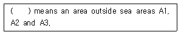
- Sea area A4
- Sea area A5
- Sea area A6
- Sea area A7
(정답률: 78%)
57. 무선통신 운용 및 안보상 필요로 하여 합법적인 법 절차에 의하여 통신을 감독하는 행위는?
- 도청
- 감청
- 통화
- 비밀
(정답률: 78%)
58. 암호 및 약호자재의 사용과 관리에 관한 사항으로 틀린 것은?
- 약호자재는 대외비로 취급한다.
- 암호자재는 과거용, 미래용,현재용으로 구분하여 보관한다.
- 현재용 및 미래용 자재는 교육목적으로 사용할 수 없다.
- 암호문에 대한 회신은 약어화하여 발신한다.
(정답률: 57%)
59. 다음 중 도청에 대한 방어책이 아닌 것은?
- 통신 운용절차 및 규정을 준수한다.
- 통신제원을 수시 변경한다.
- 필요시 보안장치를 설치한다.
- 중요성에 따른 경비원을 배치한다.
(정답률: 70%)
60. 음어 자재의 긴급파기에 있어서 가장 늦게 파기하여야 하는 것은?
- 현재 사용중인 것
- 제작 중인 것
- 과거 사용한 것
- 미래용 음어
(정답률: 72%)